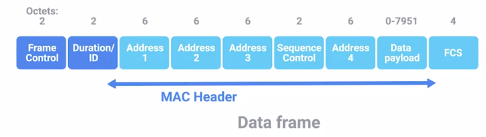
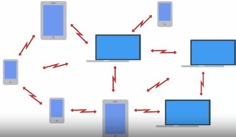
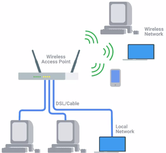
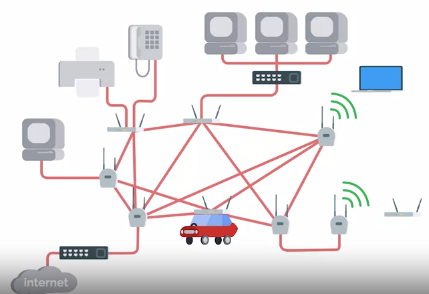
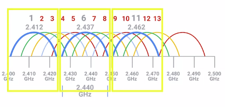

WIRELESS NETWORKING
Frequency Band: A certain section of the radio spectrum that's been agreed upon to be used for certain communications.2.4 and 5GHz
802.11 -> protocol that operates datalink and network layers
802.11b
802.11g
802.11n
802.11ac
Higher access speeds, device accessibilities
802.11 Frame:

4 addresss fields
https://en.wikipedia.org/wiki/IEEE_802.11
Wireless Access Point : bridges wired and wireless parts
Wireless Network Configurations:
• Ad-hoc Networks : Nodes all speak directly ex: exchanging photos, videos
During disaster situations. If all infrastructure is down This can be used as SOS.

• Wireless LANS (WLANS): One or more access points acts as a bridge
Most Common.

• Mesh Networks : hybrid

WIRELESS CHANNELS: Individuals, smaller sections of the overall frequency band used by a wireless network.
Avoids collision domains.
802.11b -> 1,6,11 dont interfere

WIRELESS SECURITY:
WEP (wired equivalent policy): really weak security
WPA/WPA2(Wireless Protected Access) 128bit
• Developed by Wi-Fi Alliance
• WPA2 uses AES (Advanced Encryption Standard)
WPA2-PSK(Pre-Shared Key) 256 bit key
• Provide a plain english passphrase btwn 8-63 charactersWPA/WPA2(Wireless Protected Access)
• Developed by Wi-Fi Alliance
• WPA2 uses AES (Advanced Encryption Standard)
MAC FILTERING : access points only to allowed devices
CELLULAR NETWORKING:
Common iwth 802.11
Uses radio waves
Longer distances.
Built on concept of cells specific frequencies.
Cell towers : ACcess points
WIFI
IOT protocols